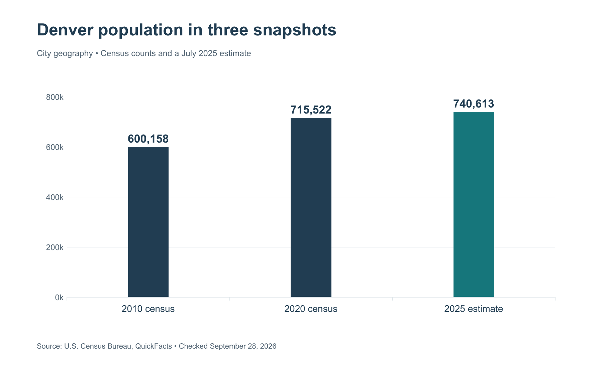
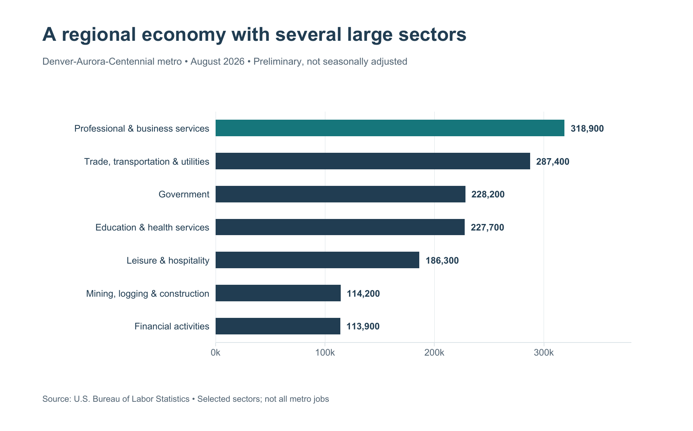
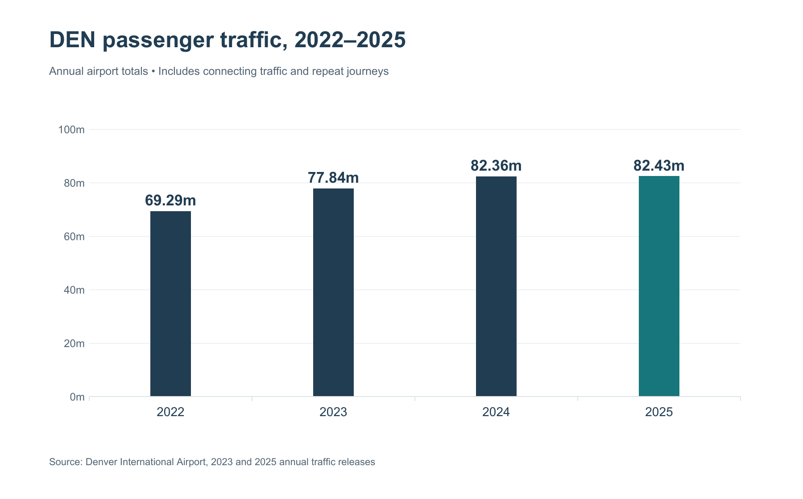

Denver is Colorado’s capital and the urban center commonly known as the Mile High City. It occupies the South Platte River valley, with the Great Plains extending eastward and the Rocky Mountains rising to the west. Its identity combines a state capital, a regional transportation hub, residential neighborhoods, cultural institutions, and access to the Front Range. Colorado’s tourism office presents this combination of city life and mountain access as a defining feature of Denver.¹
Denver is best understood at several scales. The City and County of Denver is a particular jurisdiction; the metropolitan area includes surrounding communities; and “Denver” in a travel itinerary can also refer to destinations well outside the city. Those distinctions explain why a city population count, a regional jobs estimate, and an airport traffic total describe very different things.
Contents 17 sections
- Denver population and city profile
- Geography, elevation and the Front Range
- History of Denver
- Denver neighborhoods and districts
- Landmarks, museums and cultural institutions
- Parks, trails and outdoor recreation
- Economy and regional employment
- Education and universities
- Transportation: Denver International Airport and RTD
- Denver weather and seasons
- Food, breweries and local culture
- Sports and major venues
- Tourism and the visitor economy
- Government and civic resources
- Places near Denver and regional trips
- Reading Denver statistics accurately
- Footnotes
Denver population and city profile
The Census Bureau estimated 740,613 residents on July 1, 2025, up 3.5% from its revised April 2020 estimates base. The separate 2020 census count was 715,522. Land area was 153.08 square miles in the 2020 geography. The following city measures retain their original observation periods.²
| City measure | Value | Period |
|---|---|---|
| Census population | 600,158 | 2010 |
| Census population | 715,522 | 2020 |
| Estimated population | 740,613 | July 2025 |
| Residents per square mile | 4,674.3 | 2020 |
| Households | 335,428 | 2020–2024 |
| Owner-occupied share | 48.8% | 2020–2024 |
| Median owner-occupied home value | $616,000 | 2020–2024 |
| Median gross monthly rent | $1,831 | 2020–2024 |
| Median household income | $94,718 | 2020–2024; 2024 dollars |
| Bachelor’s degree or higher, age 25+ | 56.5% | 2020–2024 |
| Foreign-born residents | 14.5% | 2020–2024 |
| Broadband subscription, households | 92.9% | 2020–2024 |
| Mean commute, workers age 16+ | 24.9 minutes | 2020–2024 |

Reading the housing and population figures
A population estimate updates the statistical picture between censuses. A multiyear household survey combines observations over a period. Consequently, the rent and home-value figures describe a broader housing stock and time window than a current rental listing or a recently sold property. They are useful reference points, while a household’s budget still depends on its location, housing type, transport needs, and circumstances.
Geography, elevation and the Front Range
Why Denver is called the Mile High City
The nickname refers to one mile, or 5,280 feet, above sea level. Elevation markers on the Colorado State Capitol’s steps connect that identity to a specific civic landmark. The legislature’s visitor guide records multiple surveys and markers, illustrating why the slogan should not be interpreted as a uniform elevation for every street, park, or airport facility. The Capitol is also the seat of the Colorado General Assembly, tying the city’s physical identity to its role as state capital.³
City, metropolitan area and mountain destinations
City boundaries answer an administrative question: which government provides a service or which population a city statistic measures? A metropolitan statistical area answers a different question about an interconnected region. A visitor district answers yet another question about where activities cluster. None of these boundaries can substitute automatically for the others.
For orientation, start with downtown and Union Station, then locate the destination by its actual address. Aurora, Lakewood, Golden, Boulder, and Morrison should not be treated as Denver neighborhoods simply because they may appear in regional travel material. In the same way, a concert at Red Rocks and a museum visit near Civic Center involve different settings and transportation plans.
History of Denver
Indigenous homelands and communities
Denver’s history predates the nineteenth-century city. The Museum of Denver describes the area as a longstanding Ute homeland and explains the presence of Arapaho and Cheyenne people along the South Platte River and Cherry Creek. Indigenous history belongs within the city’s central narrative, alongside continuing Indigenous communities, rather than serving only as a preface to settlement.⁴
Denver Public Library’s displacement research guide documents the consequences of settlement and later redevelopment for different communities. It offers a useful way to read the built environment: the appearance of a new neighborhood, rail corridor, or civic project can also involve the removal of earlier residents and uses. Historical development therefore includes both construction and displacement.⁵
Denver City, the capital and Capitol Hill
Gold seekers founded Denver City in November 1858. In 1867, Denver became the territorial capital. Denver Public Library’s Capitol Hill history connects the choice of a capitol site with land donations, real-estate development, and the eventual civic landscape. Capitol Hill consequently represents more than a collection of prominent buildings: it records changing relationships among government, property, housing, and city growth.⁶
Union Station and the railroad city
Denver Union Depot opened on June 1, 1881. The station’s present identity reflects successive building campaigns, including the 1914 central structure and a major 2014 reopening. Its operator’s history traces the transition from a railroad gateway to a renewed transportation, dining, and gathering place. Union Station is a useful landmark for understanding how Denver repeatedly adapted an existing transportation site to new patterns of urban life.⁷
| Historical anchor | Date | What it helps explain |
|---|---|---|
| Denver City founded | November 1858 | Gold-rush settlement |
| Territorial capital designated | 1867 | Government and Capitol Hill |
| Union Depot opens | June 1881 | Railroad connections |
| Station’s central building rebuilt | 1914 | The surviving architectural ensemble |
| Union Station reopens after redevelopment | 2014 | Transit and downtown reuse |
Denver neighborhoods and districts
Neighborhood names describe several different kinds of places. The Colorado Information Marketplace publishes statistical neighborhood boundaries, a consistent geographic framework for data and planning. A historic district, arts district, shopping area, or visitor grouping may cross or occupy only part of those boundaries. A comparison of rents, population, or development needs the same boundary system on both sides.⁸
Visit Denver groups many areas by visitor experience. The following orientation uses those place names without treating every row as an official statistical neighborhood.⁹
| Area or grouping | Useful orientation |
|---|---|
| Downtown and Lower Downtown, or LoDo | Union Station, historic streets and the city center |
| Capitol Hill and Golden Triangle | Civic buildings, museums and residential streets |
| Cherry Creek | Shopping, galleries and dining; distinguish the area from the waterway |
| Five Points | Community history and music heritage |
| River North Art District, or RiNo | An arts district overlapping established neighborhoods |
| Art District on Santa Fe | Galleries, studios and art walks |
| Highland, LoHi, Berkeley and Sunnyside | Distinct northwest-area identities |
| City Park, East Colfax and Uptown | Parks, cultural destinations and commercial corridors |
| Central Park and Lowry | Separate neighborhood areas outside the downtown core |
Downtown, LoDo and Larimer Square
Lower Downtown, usually shortened to LoDo, combines historic commercial buildings with restaurants, galleries, shops, and connections to Union Station. Larimer Square is a distinct historic dining and shopping destination. Nearby Dairy Block and McGregor Square organize activity around compact blocks and gathering spaces; McGregor Square sits beside Coors Field. The Colorado Convention Center and its blue bear sculpture, I See What You Mean, provide another downtown landmark. These names locate individual places within the city center, rather than interchangeable names for downtown itself.¹⁰
Five Points and its jazz heritage
Five Points is closely associated with Denver’s Black history and jazz culture. Denver Public Library describes appearances by musicians including Duke Ellington and Billie Holiday, placing music within the neighborhood’s broader community story. That history is more informative than treating Five Points as simply another entertainment district: it connects venues and performances with the people who built and sustained them.¹¹
RiNo: an arts district across neighborhood boundaries
The River North Art District identifies four historic neighborhoods that it overlaps: Five Points, Cole, Globeville, and Elyria-Swansea. Its nonprofit arts organization supports artists and creative activity within that setting. “RiNo” is therefore useful as a cultural and commercial locator, while the underlying neighborhood name remains important for interpreting an address or a neighborhood dataset.¹²
Art District on Santa Fe
The Art District on Santa Fe organizes First Friday Art Walks around galleries, studios, and other creative spaces. Its name refers to Denver’s arts district, not the city of Santa Fe in New Mexico. For a visit, the district’s maintained event information is more reliable than assuming every gallery keeps identical hours or that a past event schedule still applies.¹³
Landmarks, museums and cultural institutions
Denver Art Museum and the civic district
The Denver Art Museum provides a major focus for visual art near Denver’s civic center. Its official site presents collections, exhibitions, learning programs, and visitor information. Permanent collections and temporary exhibitions serve different purposes: one offers continuity in the museum’s identity, while the other changes what is on view. A useful museum visit starts by checking the current exhibition list and admission arrangements, especially when a particular work or show is the reason for going.¹⁴
The museum’s Frederic C. Hamilton Building, completed in 2006, is also an architectural landmark. Studio Libeskind describes the extension as 146,000 square feet, with an exterior composed of 9,000 titanium panels. Its angular forms give the museum a recognizable presence in the civic district. Those figures describe the Hamilton project, not the floor area or materials of the entire museum campus.¹⁵
Denver Museum of Nature and Science
The Denver Museum of Nature & Science connects public exhibitions with scientific collections and research. Its archives document anthropology, earth sciences, zoology, fieldwork, and the museum’s development in City Park. The museum is consequently both a public destination and a research institution. That distinction helps explain why collections and scientific work extend beyond the specimens and displays visible during an ordinary visit.¹⁶
Denver Zoo Conservation Alliance
The institution long known as Denver Zoo uses the name Denver Zoo Conservation Alliance. Its 2024 annual report describes a mission that combines animal care, conservation, and public engagement. The fuller name matters because the organization’s work is broader than a visitor attraction. Its annual reporting is also a better source for a dated institutional measure than an undated promotional summary.¹⁷
Denver Botanic Gardens at York Street
Denver Botanic Gardens’ York Street site covers 24 acres and presents gardens and plant collections from different parts of the world. The institution supplies a site map and accessibility information, which are useful because an outdoor garden visit involves paths and changing seasonal conditions as well as indoor facilities. The York Street location should be identified explicitly when making plans; a general institution name alone does not establish which site an event uses.¹⁸
Parks, trails and outdoor recreation
Denver Parks and Recreation reports 30 recreation centers and nearly 20,000 acres of urban and mountain parkland. The mountain-park component includes 14,000 acres. These are descriptions of a managed system, not a claim that all of that land lies inside Denver city boundaries. Urban parks, parkways, natural areas, off-street trails, and mountain properties have different functions within that system.¹⁹
City Park, Washington Park and Confluence Park
Several urban parks connect recreation with Denver’s geography and cultural institutions. City Park covers approximately 330 acres in Visit Denver’s park guide. Confluence Park marks the meeting of Cherry Creek and the South Platte River, making the city’s river setting visible within an urban landscape. Washington Park combines two lakes, flower gardens, and recreation paths. Civic Center Park sits among prominent civic and cultural buildings, including the Capitol area, Denver Public Library, and Denver Art Museum. These parks offer different experiences: a riverside stop, a neighborhood circuit, a museum-centered outing, or time in the civic core.²⁰
Urban recreation and mountain recreation
An urban park visit and a mountain outing involve different decisions. In the city, transit access, path connections, opening arrangements, and proximity to a museum may determine a plan. Beyond the city, road access, elevation, weather, and available daylight become more important. Keeping those experiences separate makes a city itinerary more realistic.
City Park’s museum setting illustrates the value of combining nearby destinations. A visitor can organize time around a single area rather than treating every Denver attraction as equally close. For trails, choose the actual route and its current access information; the word “trail” can describe both an urban shared-use path and a much more demanding mountain route.
Economy and regional employment
Denver functions within a regional labor market. The Bureau of Labor Statistics’ Denver-Aurora-Centennial metropolitan table reported 1,653,500 nonfarm jobs in August 2026, a 0.1% year-over-year increase. Those figures were preliminary and not seasonally adjusted. The table’s latest unemployment reading was 4.1% for July 2026, also preliminary; its August labor-force cells were blank when checked. These metro figures should not be relabeled as city-only employment.²¹
| Selected sector | Jobs, August 2026 |
|---|---|
| Professional and business services | 318,900 |
| Trade, transportation and utilities | 287,400 |
| Government | 228,200 |
| Education and health services | 227,700 |
| Leisure and hospitality | 186,300 |
| Mining, logging and construction | 114,200 |
| Financial activities | 113,900 |

What the industry mix means
The sector comparison shows why a city economy cannot be explained by one employer or one famous industry. Professional services, distribution, government, education, health care, and hospitality connect to different kinds of workplaces and customers. A payroll job is also a different unit from an employed resident: workers cross municipal boundaries, and a person may hold more than one job.
Institutions elsewhere on this page illustrate those connections without forming an employer ranking. The airport relates to transportation and visitor activity; universities combine teaching, research, and employment; museums connect cultural activity with education; and state and local government perform public functions. Their individual scale cannot be inferred from an unrelated sector total.
Education and universities
University of Colorado Denver
The University of Colorado Denver, or CU Denver, is a public urban university associated with downtown and the Auraria campus. Its academic structure includes architecture and planning, arts and media, business, engineering, education, liberal arts and sciences, and public affairs. The institution is a useful reference point for understanding how higher education is embedded in the city’s civic and professional life.²²
Metropolitan State University of Denver
Metropolitan State University of Denver, or MSU Denver, is a separate institution with undergraduate, graduate, and professional learning opportunities. Its public-facing materials emphasize access, career development, and connections between education and work. The shared Auraria setting does not make MSU Denver and CU Denver one university; applications, degrees, academic programs, and institutional statistics must be attributed to the correct school.²³
University of Denver
The University of Denver, commonly DU, was founded in 1864 and is a private doctoral-granting university. Its institutional history identifies 2022 as the year it achieved R1 research status. DU is distinct from the University of Colorado Denver despite the similar names. Preserving that distinction helps readers find the intended campus, academic program, or institutional history.²⁴
Transportation: Denver International Airport and RTD
Denver International Airport passenger traffic
Denver International Airport, identified by DEN, is a major regional air gateway. The airport reported 69,286,461 passengers in 2022 and 77,837,917 in 2023, a 12.3% increase in its published comparison.²⁵
Traffic reached 82,358,744 in 2024 and 82,427,962 in 2025. DEN’s January 2026 release described the latter increase as 0.1%. International traffic in 2025 totaled 4,867,484, or 5.9% of the airport’s total. Connecting passengers and repeated journeys help explain why airport totals greatly exceed the number of city residents or a tourism survey’s visitor estimate.²⁶

RTD A Line and Denver Union Station
The Regional Transportation District, or RTD, operates the A Line between Denver Union Station and the airport. RTD describes a 23-mile electric commuter-rail route with eight stations and a journey of approximately 37 minutes. The route recorded 5.9 million boardings in 2024. A boarding counts a transit use; it is not a unique passenger or an airport-visitor total.²⁷
Union Station is the downtown endpoint, so the airport train’s journey time is only part of a trip to a hotel, office, or neighborhood. Add time for walking through the airport, waiting, and reaching the final destination. A downtown arrival and an airport-area stay are different choices even when both addresses say Denver.
Planning movement within the city
For a practical itinerary, group destinations by location before choosing transportation. Identify the nearest useful stop, any transfer, and the last part of the journey on foot. Match a return trip to the end of an event rather than to its advertised start time. For walking or cycling, evaluate the actual path and crossings instead of assuming a short straight-line distance creates an easy route.
Denver weather and seasons
Climate normals summarize a long observation period; they are not a forecast for a particular visit. The National Weather Service’s Denver-area records give a January mean temperature of 31.7°F for the 1991–2020 normal period.²⁸
The corresponding July mean is 75.1°F. A monthly mean combines warmer and cooler parts of the day and should not be read as a typical afternoon high. The difference between January and July describes the seasonal cycle more clearly than a broad claim that Denver has one kind of weather year-round.²⁹
NWS lists 47.0 inches as the estimated 1991–2020 seasonal normal snowfall at Denver International Airport. It separately lists 49.0 inches for Central Park/Stapleton. A seasonal snowfall total adds snowfall over time; it does not describe the depth of snow simultaneously on the ground. The archive records substantial year-to-year variation, so a normal is a reference value rather than a promise of conditions.³⁰
Mountain travel deserves its own conditions check. A Denver forecast describes the city’s setting, while higher-elevation destinations can have different temperatures, snowfall, road access, and operating seasons. Planning an outdoor day therefore requires the destination’s forecast as well as the city’s.
Food, breweries and local culture
Denver’s food culture includes Mexican and Southwestern influences, with green chile appearing in destination accounts as a familiar local dish and accompaniment. Visit Denver’s food coverage connects it with burritos, burgers, and other preparations. That is a culinary theme, not a reason to assume every restaurant uses the same recipe or offers the same experience.³¹
Dining can also be approached geographically. A meal near a museum, a performance, or Union Station serves a different itinerary from a dedicated neighborhood visit. The useful comparison is the actual combination of location, opening time, menu, accessibility, and available transportation. Neighborhood identity can guide discovery without substituting for those details.
Breweries and the Denver Beer Trail
Visit Denver’s Denver Beer Trail organizes brewery, brewpub, and taproom discovery across the metro area. Those terms describe different visitor experiences: a taproom visit, a meal at a brewpub, and a production tour need not offer the same facilities or schedule. The directory includes the wider region, making a business’s address more useful than assuming every listed stop is in downtown Denver.³²
Art walks, jazz heritage, public collections, and live sports represent different parts of Denver’s cultural life. They also operate on different schedules: a museum collection may be regularly accessible, while a performance or festival occurs at a specified time. A recurring event’s name is not evidence that a particular edition has been announced.
Sports and major venues
Coors Field and the Colorado Rockies
Coors Field is the Colorado Rockies’ baseball home. The club’s ballpark resources cover access, seating, tours, and game-day arrangements.³³
Ball Arena: Nuggets, Avalanche and Mammoth
Ball Arena is home to the Denver Nuggets, Colorado Avalanche, and Colorado Mammoth. Its operator describes basketball, hockey, lacrosse, concerts, and other events within a venue whose layout can change by event. A seating diagram for one sport or concert configuration therefore should not be treated as universal.³⁴
Denver Broncos and Empower Field at Mile High
The Denver Broncos are associated with Empower Field at Mile High. The stadium’s official information also covers other events, directions, and visitor arrangements. The venue name and current schedule should guide a ticket or transportation search; a general reference to “Mile High” can otherwise be confused with the city’s nickname.³⁵
For any venue, confirm the event, address, entry rules, and return journey together. A ticket confirms admission under its terms; it does not establish parking availability or the operating hours of an unrelated transit service.
Tourism and the visitor economy
Visit Denver’s 2025 Longwoods-based visitor table reports 37.6 million total visitors, 20.1 million overnight visitors, and 17.6 million day trips. It also lists an average overnight stay of 2.8 nights, $8.7 billion in overnight spending, and $1.7 billion in day-visitor spending. These are published survey estimates. Rounded components do not sum exactly to the reported total, so they should not be forced into a falsely precise reconstruction.³⁶
The bureau’s separate Facts and Figures page reports $10.5 billion in 2025 tourism revenue. This is the source’s published aggregate; it is not calculated here by adding rounded categories. Tourism spending, airport passenger traffic, and resident income measure different economic activities and populations.³⁷
Those distinctions matter when interpreting the city’s visitor economy. An airport connection may generate passenger traffic without an overnight stay in Denver. A day trip generates a visitor count without an overnight hotel booking. Spending estimates capture activity across categories; they do not show how benefits or costs are distributed among every business and neighborhood.
Government and civic resources
The City and County of Denver administers local government separately from the State of Colorado. Its mayor’s office identifies Mike Johnston as the city’s 46th mayor, as checked in September 2026. Residents seeking city services should use the municipal department responsible for the subject rather than assuming the state capitol handles local service requests.³⁸
The Denver City Council publishes hearings, legislation, committee information, meeting records, and ways to participate. Its official site also directs residents to district contacts and municipal service channels. The appropriate route depends on the task: a service request, a public-hearing comment, a legislative question, and a records search are different activities.³⁹
For readers seeking a local private legal-services resource, The Advocates describes its Denver personal-injury practice and the types of accident claims it handles. This independent listing is not a recommendation or a substitute for comparing qualifications, terms, and current information.
Places near Denver and regional trips
Red Rocks Park and Amphitheatre
Red Rocks Park & Amphitheatre is closely associated with the Denver region, but its official address is 18300 West Alameda Parkway, Morrison, Colorado. It belongs in a regional itinerary rather than being described as a downtown Denver attraction. The precise address helps separate the venue’s regional identity from its physical location.⁴⁰
Rocky Mountain National Park
Rocky Mountain National Park is another regional destination requiring a separate trip. The National Park Service’s basic-information page provides operating-season, access, and planning information. Conditions and entry arrangements can change, making the official park information the relevant starting point for an actual visit. A Denver city overview cannot establish which mountain road, trail, or facility will be available on a particular day.⁴¹
Connecting a city stay with the wider region
A practical regional plan starts with the destination rather than a generic distance from Denver. Identify the entrance, event venue, or trailhead; account for the mode of travel and the return journey; then check current conditions. Downtown museums, neighborhood dining, an airport transfer, a Morrison concert, and a mountain-park day can all belong to the same trip while requiring very different amounts of time and preparation.
Reading Denver statistics accurately
| Label | What it measures | Common confusion to avoid |
|---|---|---|
| Denver city population | Residents inside the city geography | Substituting a metro-area count |
| Metro payroll jobs | Jobs in the specified regional labor market | Calling them city residents or unique workers |
| Airport passengers | Recorded airport passenger traffic | Calling every passenger a Denver tourist |
| Transit boardings | Uses of a transit service | Treating each boarding as a different person |
| Visitor survey estimates | Trips or visitors under the study’s definitions | Equating them with an airport total |
| Climate normal | A long-term statistical reference | Treating it as a trip-date forecast |
The observation year belongs with every figure. A source checked in 2026 can correctly report a 2020 census count, a 2020–2024 household estimate, a 2025 annual total, or a preliminary 2026 monthly result. Keeping those labels visible makes comparisons useful and preserves the meaning of each source.